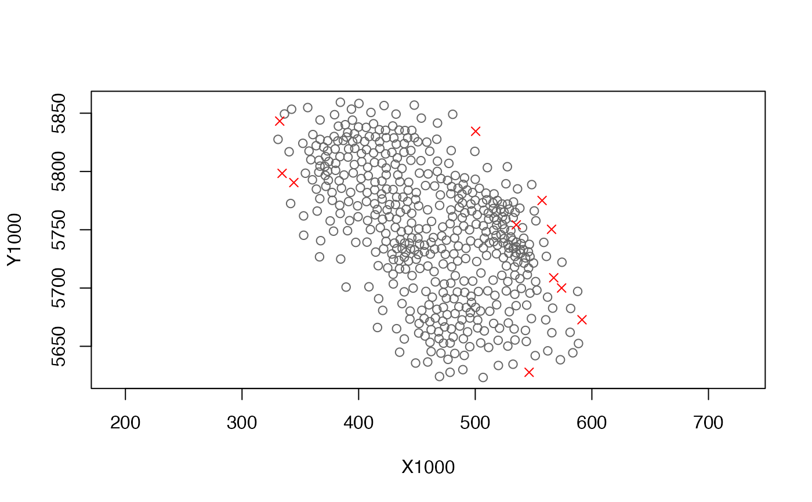

Transform a mesh object into a barrier mesh object
add_barrier_mesh( spde_obj, barrier_sf, range_fraction = 0.2, proj_scaling = 1, plot = FALSE )
| spde_obj | Output from |
|---|---|
| barrier_sf | An sf object with polygons defining the barriers. For
example, a coastline dataset for ocean data. Note that this object must
have the same projection as the data used to generate the x and y columns
in |
| range_fraction | The fraction of the spatial range that barrier triangles have. |
| proj_scaling | If |
| plot | Logical. |
A list similar to make_mesh() but with spde_barrier and a
couple other helper list elements added.
If plot = TRUE, then a basic plot will be created as a side effect. Each
grey dot represents the center of a "normal" mesh triangle. Each red cross
represents the center of a "barrier" mesh triangle.
Bakka, H., Vanhatalo, J., Illian, J., Simpson, D., and Rue, H. 2019. Non-stationary Gaussian models with physical barriers. http://arxiv.org/abs/1608.03787
http://www.r-inla.org/barrier-model
https://haakonbakkagit.github.io/btopic107.html
#>#> #>#> #> #>#> #> #>library(ggplot2) # First, download coastline data for our region. # We will use `bc_coast` from the package data, # but you can recreate it with the following. # For applied situations on finer scales, you may with to use scale = "small". # For that, first: remotes::install_github("ropensci/rnaturalearthhires") # map_data <- rnaturalearth::ne_countries( # scale = "medium", # returnclass = "sf", country = "canada") # # # Crop the polygon for plotting and efficiency: # st_bbox(map_data) # bc_coast <- suppressWarnings(suppressMessages( # st_crop(map_data, # c(xmin = -134, ymin = 46, xmax = -120, ymax = 57)))) crs_utm9 <- 3156 # Pick a projection, here UTM9 st_crs(bc_coast) <- 4326 # 'WGS84'; necessary on some installs bc_coast <- st_transform(bc_coast, crs_utm9) # Project our survey data coordinates: survey <- pcod %>% select(lon, lat, density) %>% st_as_sf(crs = 4326, coords = c("lon", "lat")) %>% st_transform(crs_utm9) # Plot our coast and survey data: ggplot(bc_coast) + geom_sf() + geom_sf(data = survey, size = 0.5)# Note that a barrier mesh won't don't much here for this # example data set, but we nonetheless use it as an example. # Prepare for making the mesh # First, we will extract the coordinates: surv_utm_coords <- st_coordinates(survey) # Then we will scale coordinates to km so the range parameter # is on a reasonable scale for estimation: pcod$X1000 <- surv_utm_coords[,1] / 1000 pcod$Y1000 <- surv_utm_coords[,2] / 1000 spde <- make_mesh(pcod, xy_cols = c("X1000", "Y1000"), n_knots = 200, type = "kmeans") plot(spde)# Add on the barrier mesh component: bspde <- add_barrier_mesh( spde, bc_coast, range_fraction = 0.1, proj_scaling = 1000, plot = TRUE )#> Warning: 'giveCsparse' has been deprecated; setting 'repr = "T"' for you#> Warning: 'giveCsparse' has been deprecated; setting 'repr = "T"' for you#> Warning: 'giveCsparse' has been deprecated; setting 'repr = "T"' for you# In the above, the grey dots are the centre of triangles that are in the # ocean. The red crosses are centres of triangles that are over land. The # spatial range will be assumed to be 0.1 (`range_fraction`) over land compared # to over water. # We can make a more advanced plot if we want: mesh_df_water <- bspde$mesh_sf[bspde$normal_triangles, ] mesh_df_land <- bspde$mesh_sf[bspde$barrier_triangles, ] ggplot(bc_coast) + geom_sf() + geom_sf(data = mesh_df_water, size = 1, colour = "blue") + geom_sf(data = mesh_df_land, size = 1, colour = "green")# Now, when we fit our model with the new mesh, it will automatically # include a barrier structure in the spatial correlation: fit <- sdmTMB(density ~ s(depth, k = 3), data = pcod, spde = bspde, family = tweedie(link = "log")) fit#> Spatial model fit by ML ['sdmTMB'] #> Formula: density ~ s(depth, k = 3) #> Time column: NULL #> SPDE: bspde #> Data: pcod #> Family: tweedie(link = 'log') #> coef.est coef.se #> (Intercept) 2.06 0.21 #> s(depth).1 10.62 0.98 #> s(depth).2 -4.11 0.30 #> #> Matern range parameter: 16.60 #> Dispersion parameter: 12.59 #> Spatial SD (sigma_O): 2.65 #> Spatiotemporal SD (sigma_E): not estimated #> ML criterion at convergence: 6396.956